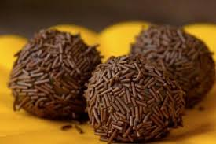

Negrinhos

Brazil's favorite treat, negrinhos are incredibly addicting.
Made with only 4 ingredientes, these fudgy balls are easy to make and
will win you heart in one bite!
Ingredients
- 1 tablespoon butter
- 395 gr sweetened condensed milk
- 30 gr cocoa powder
- 160 gr chocolate sprinkle, as needed
Preparation
- In a pot over low heat, melt the butter, condensed mil, and cocoa powder,
stirring continuisly until you can see the bottom of the pot for 2-3 seconds
when dragging a spatula through.
- Pour onto a greased plate, then chill for 1 hour
- Shape and roll the chilled mixture into balls
- Roll the balls in chocolate sprinkles
- Enjoy!